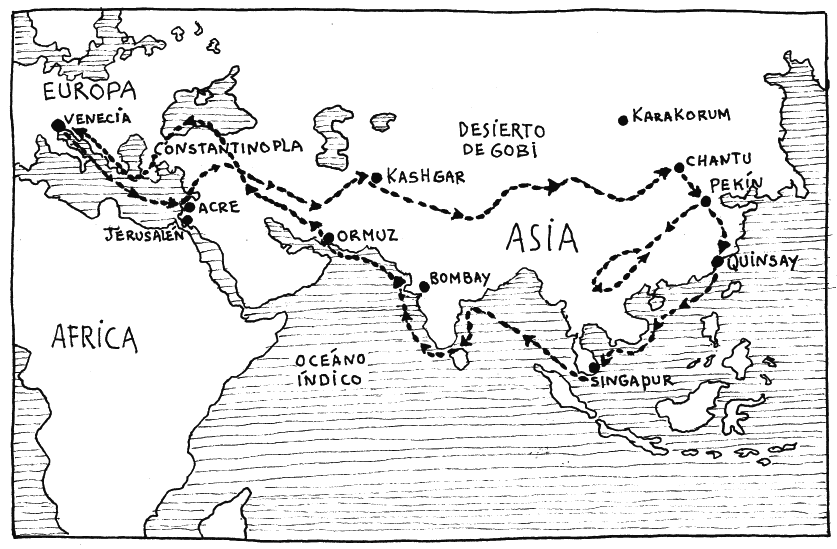
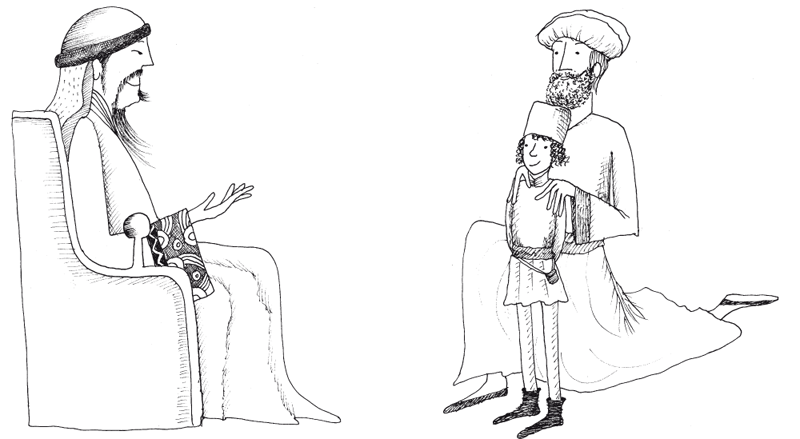

Yo, Marco Polo, habitante de Venecia, voy a contar en este libro las cosas maravillosas que vi del mundo, especialmente de las regiones de Armenia, Persia, India y Tartaria, así como de otras muchas regiones lejanas. Estas historias las escribí estando preso en la ciudad de Génova en el año de 1298, las dividí en tres partes, y todo lo que vi y otros me contaron es verdadero. Cuando el príncipe Balduino reinaba en la ciudad de Constantinopla, en el año de 1250, mi padre Nicolo y su hermano, mi tío Mafeo, de apellido Polo, habitantes de la ciudad de Venecia, se embarcaron en una nave cargada de riquezas y mercancías, y pusieron rumbo a Constantinopla, con viento favorable y bajo la bendición de Dios. Una vez llegaron a Constantinopla, zarparon de nuevo y llegaron a la ciudad Soldanía. Desde allí fueron a la corte de un rey de los tártaros, llamado Berca Khan a quien le ofrecieron todos los regalos que llevaban; y él, por su parte, los acogió y también les dio ricos y más valiosos regalos.
Después de un año de estar allí quisieron volver a Venecia, pero estalló una nueva guerra entre este monarca y otro rey de los tártaros. Por esta razón, no pudieron volver a su patria por la ruta anterior, y tuvieron que cruzar un desierto donde no había ciudades ni aldeas, hasta que llegaron a una ciudad llamada Bucara, la más importante de Persia, en la que gobernaba un rey de nombre Barach. Allí vivieron tres años.
Entonces llegó a Bucara un mensajero del gran rey de los tártaros, llamado Kublai Khan y al ver que hablaban muy bien la lengua tártara, se alegró sobremanera, porque nunca había visto otros hombres latinos, y los invitó a que fuesen con él ante el gran rey de los tártaros, prometiéndoles que obtendrían muchos honores. Los dos, como sabían que no podrían volver a su patria sin peligro, emprendieron el viaje con el mensajero bajo la protección de Dios, en compañía de unos criados cristianos que habían traído de Venecia. Después de un año de viaje, por causa de las nevadas y las crecidas de los ríos, llegaron ante el gran rey de todos los tártaros y todo lo que vieron durante esta travesía será descrito más adelante en este libro.
Cuando por fin llegaron, el rey, que era muy amable, los recibió con alegría, y les preguntó muchas cosas sobre las regiones de Occidente, sobre todos los reyes y los príncipes cristianos, sobre las costumbres de los latinos, y, por encima de todo, por el Papa de los cristianos y el culto de la fe cristiana. Los dos hermanos, que eran hombres muy prudentes, respondieron a cada pregunta, de tal forma que el rey Kublai Khan ordenó que los llevaran todo el tiempo a su presencia.
Un día el Gran Khan les rogó a los dos hermanos que regresaran donde el Sumo Pontífice de los cristianos para que le enviaran a cien buenos cristianos que le enseñaran si era verdad que la fe de los cristianos era la mejor de todas, y que los dioses de los tártaros eran demonios, y que ellos y los demás orientales estaban engañados. Los hermanos contestaron que cumplirían su voluntad, y el rey ordenó escribir una carta al Papa. También mandó que les entregaran una chapa de oro para poder recorrer todo su reino sin peligro. También les encargó el rey que, a su vuelta, le trajesen aceite de la lámpara del Sepulcro de Nuestro Señor Jesús en Jerusalén. Emprendieron entonces el regreso, pero tardaron otros tres años hasta llegar a la costa y embarcarse hacia Venecia, en el mes de abril del año de 1269.
Cuando llegaron se enteraron de que el Papa acababa de morir, y les aconsejaron que esperaran a que nombraran un nuevo Pontífice antes de volver donde el gran rey de los Tártaros. Navegaron hacia Venecia para ver a sus familias. Allí, mi padre Nicolo encontró que mi madre había muerto, y que tenía un hijo llamado Marco, con quince años de edad. Este Marco soy yo, el que escribió este libro. Los hermanos estuvieron en Venecia dos años esperando. Pero, por el temor de que el rey de los tártaros pensara que no querían volver, decidieron volver a embarcarse y me llevaron con ellos. Fueron a Jeruslén y tomaron aceite de la lámpara del Sepulcro, como les había pedido el rey. Cuando estaban listos para partir, supieron que había nuevo Papa, llamado Gregorio, quien los hizo llamar para entregarles una carta para el rey de los tártaros. Después de muchos peligros por las guerras, las nieves y las aguas torrenciales, llegamos después de tres años y medio de camino. Kublai Khan, al saber que los dos hermanos habían regresado, envió sus mensajeros con todo lo necesario para el camino.

Nos recibió con alegría, y le entregamos la carta del Papa Gregorio y el aceite. Quiso saber quién era yo y al oír que era hijo de Nicolo, me saludó complacido. En su reino crecí y aprendí sus costumbres y también aprendí cuatro diferentes lenguas. Después, él me envió a una región lejana, a la que se tardaba en llegar seis meses. Por todos los lugares donde pasaba, me informaba de tales novedades, para satisfacer la voluntad del Gran Khan. Por este motivo, durante los diecisiete años que estuve a su lado, el rey me mandó a importantes negocios del reino. Y esta es la razón por la que aprendí todas las cosas del mundo de Oriente, que serán descritas más adelante.
Después de muchos años, quisimos regresar a Venecia, pero como el Gran Khan nos apreciaba tanto no quería que nos marcháramos. Después de muchos ruegos, el rey no pudo negarse más a los deseos de los tres, y nos dio su permiso con tristeza. Emprendimos el viaje con todo lo necesario para sobrevivir dos años. Después de las despedidas y de navegar tres meses arribamos a la isla llamada Java. Surcamos el mar Índico durante un año y medio, y al cabo de largo tiempo y muchas fatigas, llegamos bajo la bendición de Dios de nuevo a la ciudad de Constantinopla. De allí regresamos sanos y salvos a Venecia y con muchas riquezas en el año del Señor de 1295, dando gracias a Dios por librarnos de muchos esfuerzos y peligros. Yo, Marco Polo, permanecí veintiséis años en las regiones del mundo de Oriente y todo es verdadero.